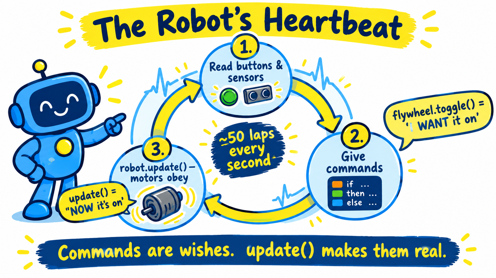
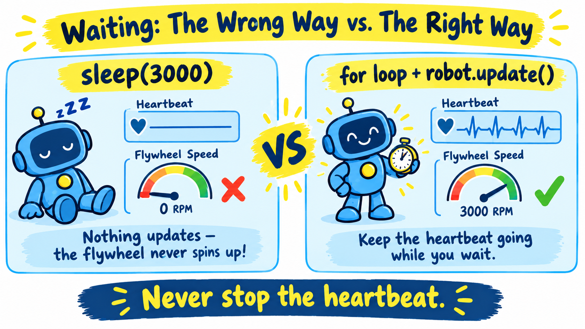
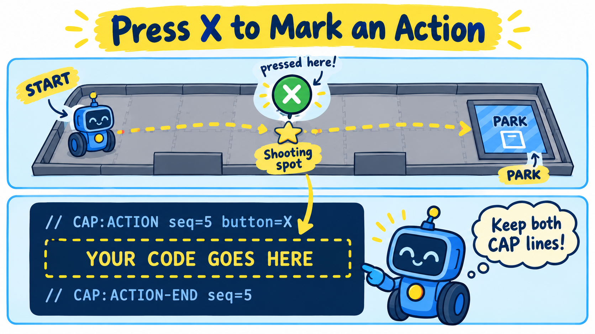

In the last lesson your SimpleAuto drove a path of poses all by itself, and you saw that the
simulator's Path Capture tool writes that same kind of code for you: you drive the route, press buttons
where things should happen, and it writes the Java. Path Capture can mark where the robot should shoot, but it
can't write the shooting code. That part is yours.
This lesson is different from the others: you won't change any code. Instead you'll dig into how an
OpMode really runs — the run loop, robot.update(), sleep(), for loops and
opModeIsActive() — until you could almost write the shooting code yourself.
This lesson ends with a reward: the complete code that makes a captured auto spin up the flywheel and shoot, ready to paste in. It unlocks only when you pass the quiz at the bottom of this lesson (8 out of 10). The questions check that you understand why the code works, so read carefully.
Every OpMode you have written has a loop at its heart. In your TeleOp it looks roughly like this:
while (opModeIsActive()) {
if (gamepad1.x) robot.indexer.feed(); // 1. read buttons, give commands
else robot.indexer.stop();
robot.update(); // 2. make the hardware match the commands
telemetry.update(); // 3. show what's happening
}Each trip around this loop takes only a few milliseconds, so it runs dozens of times every second. Think of it as the robot's heartbeat: every beat, the robot looks at what you want and makes it happen. As long as the heartbeat keeps going, the robot stays responsive.

update() — over and over, dozens
of times a second.update() makes them realHere is something that surprises a lot of programmers. When you call robot.indexer.feed(), the
servo does not move. Look at what feed() actually does in your Indexer:
public void feed() {
feeding = true; // only remembers what we WANT
}
@Override
public void update() {
feeder.setPower(feeding ? FEED_POWER : 0.0); // the ONLY line that moves the servo
}feed() just flips a boolean. The servo only changes when update() runs and calls
setPower(). Your Flywheel works the same way: toggle() flips
spinning, and it's update() that measures the RPM and sets the motor power to hold the target
speed. robot.update() simply calls update() on every subsystem — that's the scheduler you
built in From Messy Loop to Clean Class.
A command (feed(), toggle(), forward()) only records what you want.
Nothing on the robot changes until robot.update() runs. No heartbeat, no movement.
An autonomous OpMode doesn't read a gamepad, but it still needs a heartbeat. Open any auto made by Path Capture and you'll find a loop like this after each path:
follower.followPath(chain1, SPEED, true);
while (opModeIsActive() && follower.isBusy()) {
follower.update(); // Pedro's heartbeat: where am I? push the wheels toward the path
robot.update(); // your subsystems' heartbeat
...
}There are now two heartbeats. follower.update() is Pedro Pathing's: it reads the
Pinpoint, compares where the robot is to where it should be, and sets the wheel powers. The true in
followPath(..., true) means hold the end point: after the path finishes, every
follower.update() keeps nudging the robot back onto its spot — but only as long as something keeps
calling it.
sleep() stops the heartbeatsleep(3000) pauses your OpMode for 3000 milliseconds (3 seconds). It sounds like exactly what you need
to “wait for the flywheel”. But during a sleep() nothing else in your OpMode
runs — not robot.update(), not follower.update(). The heartbeat stops.
robot.flywheel.toggle(); // wish: flywheel on
sleep(3000); // wait for it to spin up...?
robot.indexer.feed(); // wish: feed
sleep(5000); // wait while it shoots...?Think it through. toggle() and feed() only record wishes. Nothing ever calls
robot.update(), so the flywheel never gets power and the indexer never turns. The robot just sits there
for 8 seconds. And with follower.update() frozen too, nothing is holding the robot on its spot.

sleep() freezes everything. To wait, keep the heartbeat going.A tiny sleep() inside a loop is fine, though. sleep(20) is just a short breath
between heartbeats: the loop still calls update() every lap, and the pause sets how fast the laps go.
Don't wait with one long sleep(). Wait with a loop that keeps calling
follower.update() and robot.update() every lap.
for loop is a stopwatchYou need a loop that keeps the heartbeat going for a set amount of time. A for loop that counts laps
does exactly that:
for (int i = 0; i < 100; i++) {
// ... do one lap of work ...
sleep(20); // each lap takes about 20 ms
}A for loop has three parts inside its parentheses:
int i = 0 — start: make a lap counter called i, starting at 0.i < 100 — keep going while this is true.i++ — after each lap, add 1 to i.So this loop runs 100 laps. If each lap takes about 20 milliseconds, the whole loop takes about 100 × 20 ms = 2000 ms = 2 seconds. Want 3 seconds? 3000 ÷ 20 = 150 laps. Want 5 seconds? 250 laps. (It's “about” because each lap also spends a little time on its work, so the real time runs slightly long. For an auto, that's close enough.)
One more detail: i only exists inside its own loop. That means you can write several of these
loops one after another, each with its own i, and they won't clash.
opModeIsActive(): listen for STOPopModeIsActive() is true while your OpMode is running. It turns false the moment
the driver presses STOP — or when the 30-second AUTO period ends. That's why it appears in the
condition of every loop you've seen:
for (int i = 0; i < 150 && opModeIsActive(); i++) {
...
}The && means and: keep going while we haven't finished 150 laps and the
OpMode is still active. Leave out opModeIsActive() and the loop ignores STOP until it finishes counting
— the robot would keep running after the referee or your driver tried to stop it. Every loop needs it.
Now the Path Capture side. While capturing, you drive the robot around the field and save poses. When the robot reaches a spot where something should happen, press a button — for shooting, press X on the controller (or the 3 key). Then keep driving, for example to park, and save.

CAP lines.Pressing X does not make the robot do anything by itself. It's a bookmark. In the saved file you'll find a block like this at that point in the auto:
// CAP:ACTION seq=5 button=X
// ── Captured action: Button X pressed here ──
// TODO: call your subsystem here, ...
// CAP:ACTION-END seq=5When the auto runs, it follows the path up to the shooting spot, runs whatever code sits between these two lines,
and then carries on with the next path — to park, in our example. (Your seq number may be
different; that's fine.)
// CAP:ACTION and // CAP:ACTION-END. Replace the
two comment lines in the middle with it.CAP lines exactly as they are. Path Capture uses them to reopen your auto
for editing; if one is changed or deleted, it refuses to load the file.CAP lines is kept when you reopen the file in Path Capture. Code you put
anywhere else can be lost.Put it all together and shooting is a short recipe:
robot.flywheel.toggle(). It aims for its default target speed (4000 RPM in
your Flywheel code).robot.indexer.feed() — the same thing holding X does in TeleOp.Watch the clock: AUTO lasts 30 seconds, and this shot uses about 8 of them. Driving to the shooting spot and then to park has to fit in what's left.
CAP lines of your captured auto.